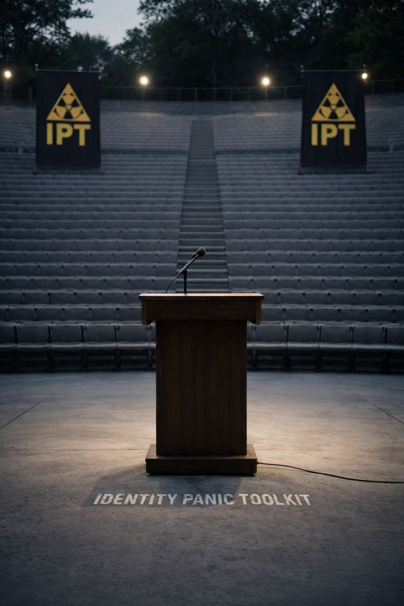

In an age of collapsing belonging, parasocial relationships — one-sided bonds with creators, celebrities, or influencers — become emotional scaffolding.
They feel like friendships because your brain can’t tell the difference between a face on-screen and a face across the room. But when identity panic sets in, that illusion of closeness fills the gap where community used to be.
But when they replace real reciprocity, they trap you in someone else’s story instead of your own.
Turn fascination into reflection.
Ask: What do they awaken in me that I’m afraid to express myself?
When you reclaim the qualities you project onto them — humor, courage, influence, confidence — you stop worshipping borrowed mirrors and start rebuilding selfhood that breathes.